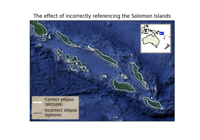
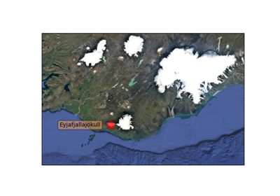
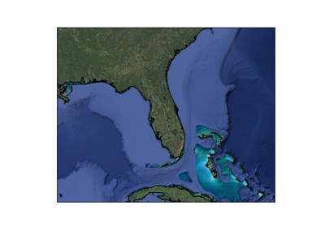
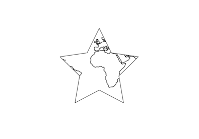
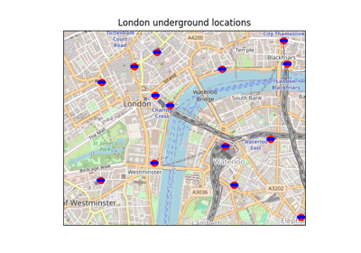

Gallery#
The following examples show off the functionality of Cartopy. They illustrate the kinds of things you can do with this library. For more examples, tutorials, and guides on how to use Cartopy, see the getting started section.
Lines and polygons#



The effect of badly referencing an ellipse
The effect of badly referencing an ellipse

Scalar data#

Adding a cyclic point to help with wrapping of global data
Adding a cyclic point to help with wrapping of global data



Map tile acquisition

Plotting the Aurora Forecast from NOAA on Orthographic Polar Projection
Plotting the Aurora Forecast from NOAA on Orthographic Polar Projection

Reprojecting images from a Geostationary projection
Reprojecting images from a Geostationary projection
Vector data#


Web services#

Displaying WMTS tiled map data on an arbitrary projection
Displaying WMTS tiled map data on an arbitrary projection



Web tile imagery
Gridlines and labels#


Miscellanea#



Modifying the boundary/neatline of a map in cartopy
Modifying the boundary/neatline of a map in cartopy

Tube Stations